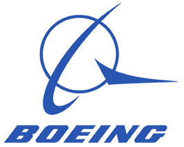
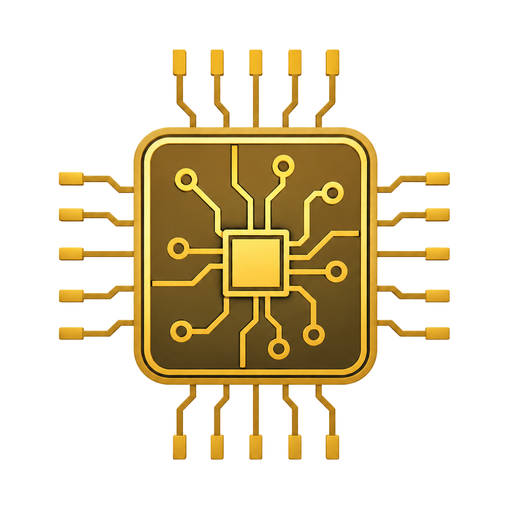
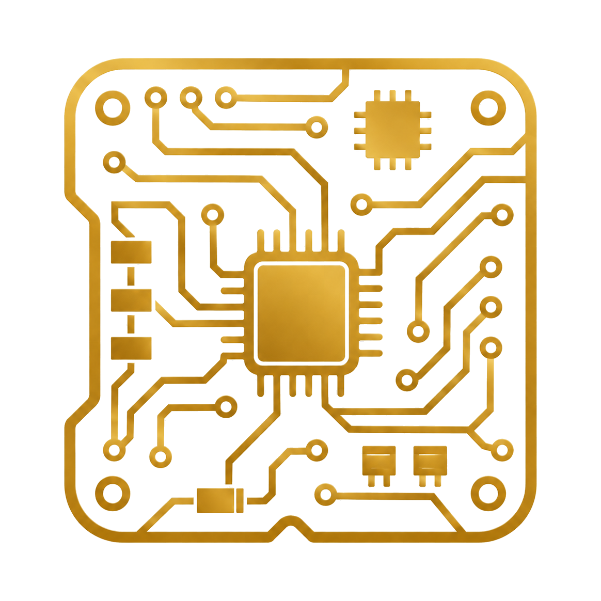
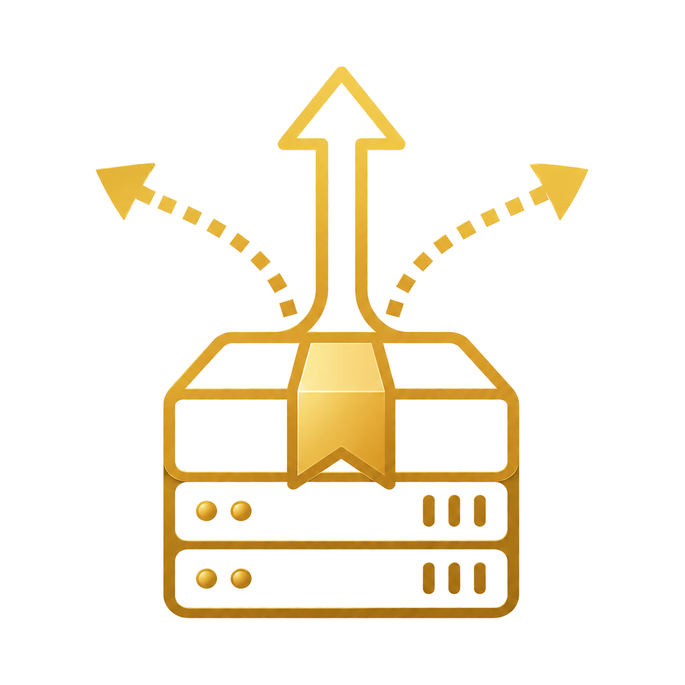
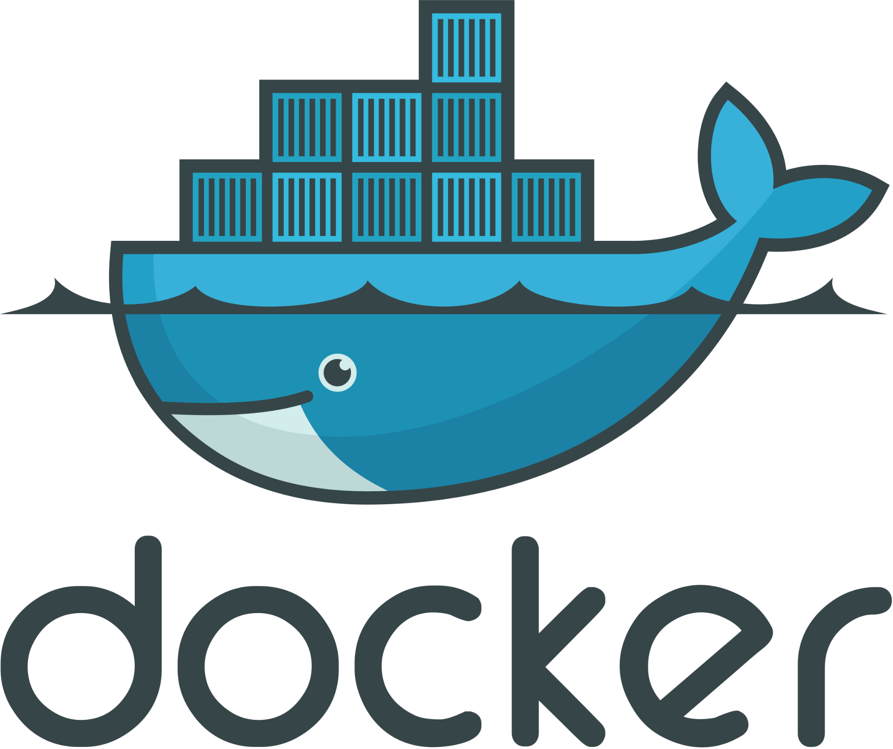
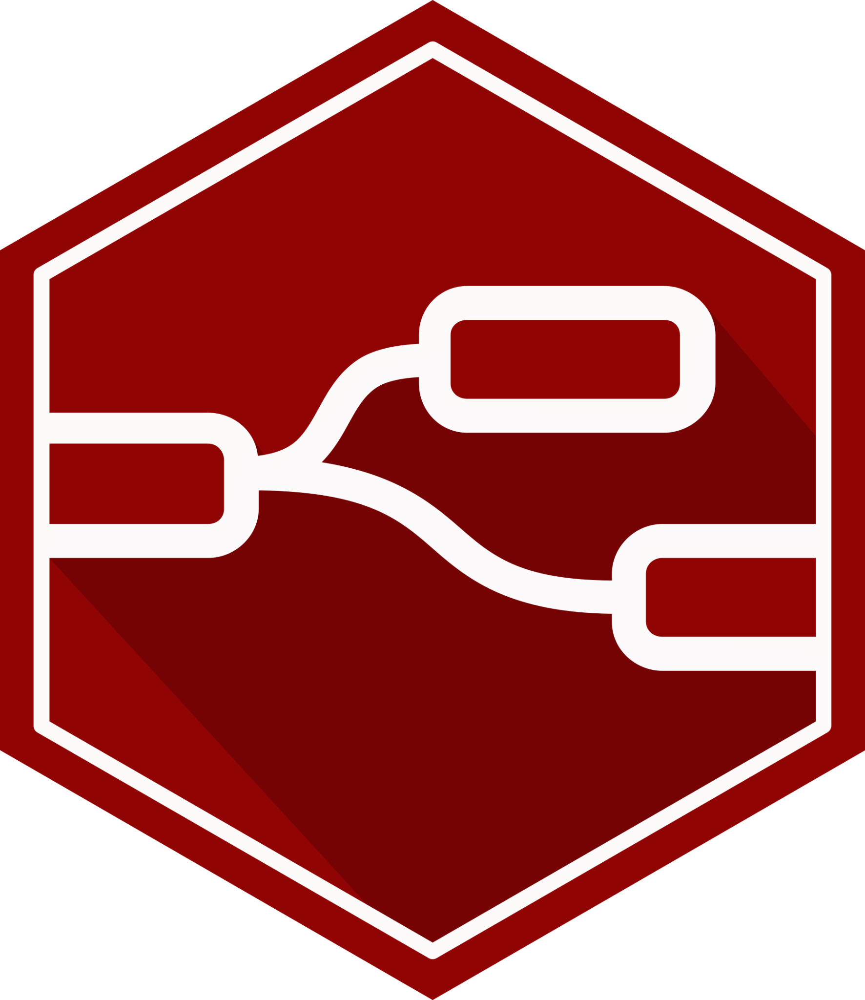
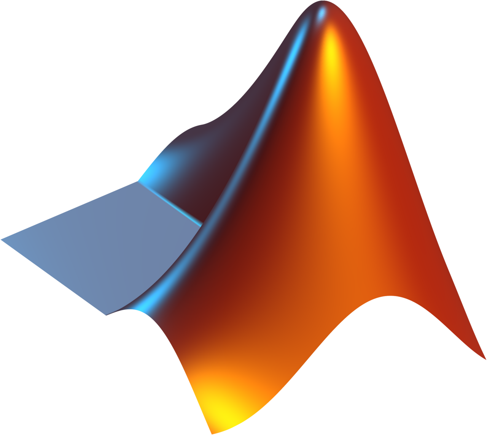
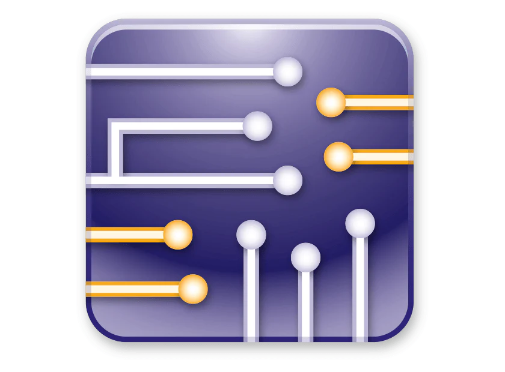
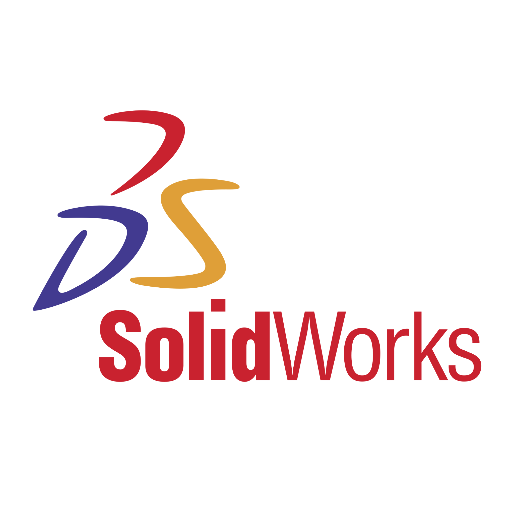
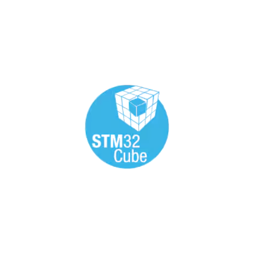

Current
Boeing
Avionics Engineer
Project Portfolio

Embedded Systems
PCB Design Wireless Communication
Software Deployment
Purdue EET graduate focused on turning requirements into testable plans,
integrating working systems, and documenting technical decisions
so they hold up through reviews, handoffs, and verification.

Avionics Engineer
B.S. Electrical Engineering Technology
PCB Design Intern
Wireless Comm. + Embedded Systems
Selected systems combining hardware, software deployment, automation, and technical documentation.
Two-layer self-hosted platform combining a dedicated OPNsense firewall, Docker-based application host, Frigate + Coral AI, and unified operations dashboards.
View Breakdown →Browser-based dashboard integrating weather, calendar-style data, air quality, and automation data flows.
View Breakdown →Industry-sponsored AI inspection project focused on system integration, deployment planning, and client delivery.
View Project Post →Custom dark-mode engineering portfolio built to present projects, systems thinking, and technical credibility.
View Breakdown →
Docker
Node-RED
MATLAB Microchip
NI Multisim
SolidWorks
STM32